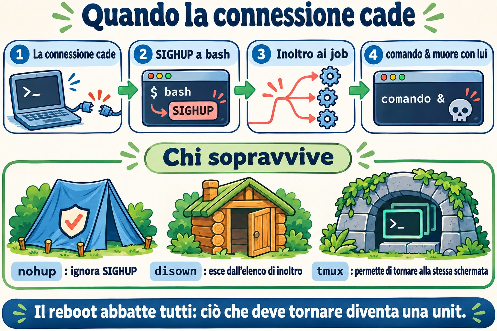
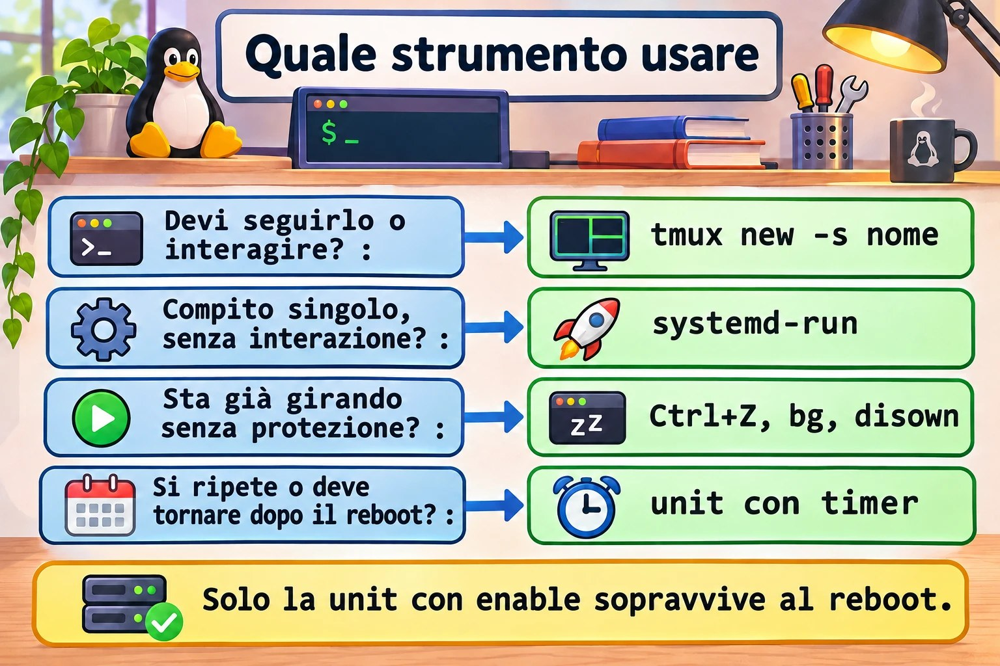
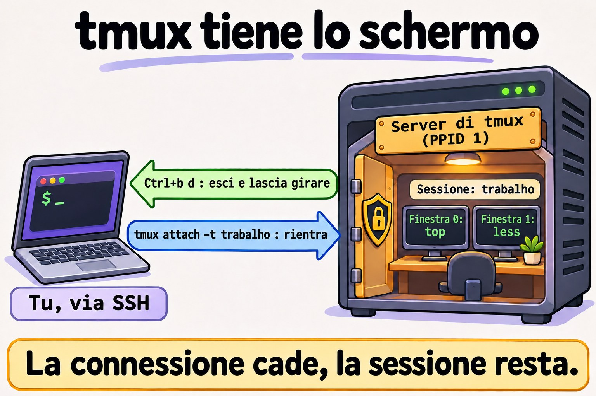
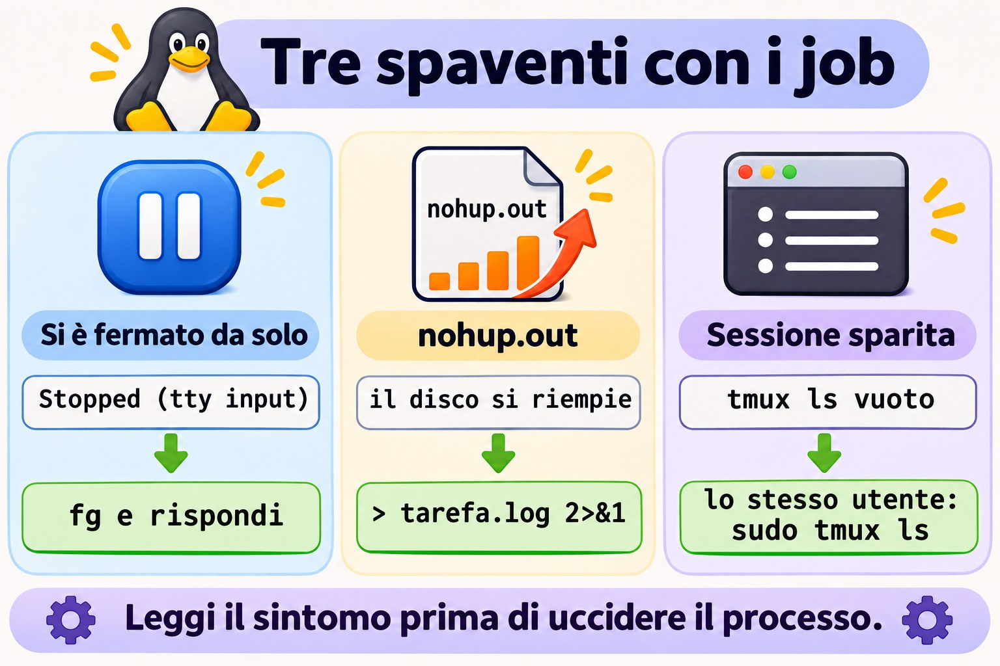

Lezione 7.2 · Job e sessioni
L'aggiornamento era all'80% quando è caduta la VPN. Chi l'ha vissuto sa quanto è grave il problema. In questa lezione capisci perché un comando muore insieme alla connessione e scegli lo strumento giusto per ogni attività lunga: job, nohup, disown, tmux o systemd-run.
Il cuore di questa lezione: controllare i job con
&, Ctrl+Z,jobs,fgebg; capire cosa fa SIGHUP quando il terminale sparisce; usarenohupsenza riempire il disco; lavorare intmuxe tornare alla sessione dopo la caduta; e sapere quando l'attività merita di diventare un servizio. Il resto è approfondimento.
| Scheda | |
|---|---|
| Modulo | M7 · Processi e prestazioni, lezione 2 di 3 |
| Quando | Settimana 11 |
| Alla fine | La tua attività lunga sopravvive alla caduta di SSH, e ci torni da dove sei |
| Prerequisiti | Lezioni 0.2, 2.3 e 7.1 |
| Durata | circa 2h |
| Snapshot | m7a2-inicio e m7a2-fim su rocky-lab e debian-lab |
1 · Riscaldamento
Rispondi prima di leggere.
- Quale segnale invia Ctrl+C? E quale sarebbe il codice di uscita?
- Un comando è stato avviato con
&e hai chiuso la finestra SSH. Continua a girare? - Se esci con
exitinvece di chiudere la finestra, la risposta cambia?
2 · Perché conta
| La richiesta | La risposta sbagliata | Cosa provoca |
|---|---|---|
"Il dnf upgrade si è fermato a metà quando è caduta la connessione" | Rilanciarlo direttamente su SSH | La prossima caduta può lasciare il sistema a metà |
| "Il disco si è riempito e nessuno sa perché" | Cercare solo nei log | Un nohup.out gigante, dimenticato nella cartella di qualcuno |
| "Lo script si è fermato da solo, senza errori" | Rilanciarlo | È in background e aspetta una risposta che nessuno vede |
"L'avevo lasciato in tmux ed è sparito" | Pensare che tmux abbia fallito | È stato aperto come root, oppure il server si è riavviato |
"Ogni giorno apro tmux per lanciare questo backup" | Continuare così | Un'attività ripetuta merita un servizio e una pianificazione |
3 · Modello mentale
La connessione SSH è un filo del telefono tra te e la shell. Quando il filo viene tagliato, la shell riceve l'avviso (SIGHUP) e lo gira ai suoi job.
nohupedisownsono modi per tappare l'orecchio di un processo a quell'avviso.tmuxfa un'altra cosa: installa un interno dentro il server. Il tuo programma parla con l'interno, il tuo SSH si limita a guardarlo, e quando il filo cade l'interno continua a rispondere.
ssh ── sshd ── bash (líder da sessão) ── pts/0
├─ vim primeiro plano
└─ backup.sh segundo plano
conexão cai → o pts some → SIGHUP no bash → o bash repassa SIGHUP aos jobs → backup morre
ssh ── sshd ── bash ── cliente tmux ┄┄ olha para ┄┄ servidor tmux (pai = PID 1)
└─ bash ── backup.sh
conexão cai → morre só o cliente → o servidor e o backup continuam → tmux attach

tmux non protegge il processo dal segnale: toglie il processo dalla traiettoria del segnale.Ponte Windows
| In Windows | In Linux | Dove il paragone inganna |
|---|---|---|
| Disconnettersi da RDP, con i programmi aperti | Ctrl+b d in tmux | Senza tmux, la caduta di SSH non equivale a disconnettersi da RDP: i processi ricevono SIGHUP |
| Fare logoff da RDP | tmux kill-session | Termina tutto ciò che era nella sessione |
Start-Job in PowerShell | comando & | Il job di PowerShell dipende dalla sessione, come quello di bash |
| Attività pianificata da eseguire una volta | systemd-run | systemd-run esegue subito e registra l'output nel journal |
| Riavvio di Windows | Reboot | Anche la sessione di tmux non sopravvive |
4 · L'essenziale
Tasti e comandi dei job
| Voglio... | Come |
|---|---|
| Eseguire in background | comando & |
| Interrompere (SIGINT) | Ctrl+C |
| Mettere in pausa (SIGTSTP) | Ctrl+Z |
| Vedere i job, con il PID | jobs -l |
| Portare in primo piano | fg %1 |
| Continuare in background | bg %1 |
| Terminare un job | kill %1 |
| Aspettare che i job finiscano | wait |
| Toglierlo dall'elenco della shell | disown %1 |
Quale strumento
| Strumento | Sopravvive alla caduta di SSH | Sopravvive al reboot | Si può tornare a vederlo | Dove finisce l'output |
|---|---|---|---|---|
comando & | No | No | Solo nella stessa shell | Nel terminale |
nohup comando & | Sì | No | No | nohup.out, se l'output era il terminale |
disown | Sì | No | No | Nel terminale che è sparito |
tmux o screen | Sì | No | Sì | Sullo schermo della sessione |
systemd-run | Sì | No | Dal journal | journalctl -u NOME |
Unit con enable e timer | Sì | Sì | Dal journal | journalctl -u NOME |
Come scegliere: il lavoro interattivo, o qualcosa che va seguito, va in tmux. L'attività puntuale senza interazione va in systemd-run. Se ti sei dimenticato di usare tutto questo e il comando sta già girando, Ctrl+Z, bg e disown ti salvano. L'attività che si ripete diventa una unit con timer.


tmux
| Voglio... | Come |
|---|---|
| Creare una sessione con nome | tmux new -s nome |
| Uscire lasciando tutto in esecuzione | Ctrl+b e poi d |
| Elencare le sessioni | tmux ls |
| Tornare | tmux attach -t nome |
| Nuova finestra | Ctrl+b e c |
| Finestra successiva | Ctrl+b e n |
| Dividere affiancando | Ctrl+b e % |
| Dividere sopra e sotto | Ctrl+b e " |
| Cambiare riquadro | Ctrl+b e o |
| Scorrere lo schermo | Ctrl+b e [, con q per uscire |
| Terminare la sessione | tmux kill-session -t nome |
screen fa lo stesso con altri comandi: screen -S nome, Ctrl+a e d, screen -ls, screen -r nome. Lo troverai sui server vecchi.
Rocky × Debian
| Rocky 9 | Debian 13 | |
|---|---|---|
tmux | dnf install tmux | apt install tmux |
screen | Pacchetto di EPEL | apt install screen |
| Comportamento di job e SIGHUP | Lo stesso, è di bash | Lo stesso, è di bash |
5 · Lab guidato
Ti serviranno due finestre SSH verso rocky-lab: la A, che verrà fatta cadere, e la B, che osserva.
Passo 0 · Snapshot e preparazione. In Proxmox: qm snapshot 201 m7a2-inicio e qm snapshot 202 m7a2-inicio. Nella finestra A:
sudo dnf install -y tmux
mkdir -p ~/lab72 && cd ~/lab72
cat > conta.sh <<'EOF'
#!/bin/bash
while true; do
date +%T >> "$1"
sleep 1
done
EOF
chmod +x conta.shPasso 1 · Controllare i job.
sleep 301 &
sleep 302Il secondo comando blocca il terminale. Premi Ctrl+Z, e continua:
jobs -l
bg %2
jobs -l
fg %1Premi Ctrl+C per terminare lo sleep 301. Poi:
jobs
kill %2
jobsFai caso allo stato: Running, poi Stopped con Ctrl+Z, e di nuovo Running con bg.
Passo 2 · Il test della caduta. Nella finestra A, avvia quattro contatori, ciascuno protetto in un modo diverso:
cd ~/lab72
./conta.sh a-sem-nada.log &
nohup ./conta.sh b-nohup.log > /dev/null 2>&1 &
./conta.sh c-disown.log &
disown
jobs -l
tmux new -d -s lab './conta.sh d-tmux.log'Ora chiudi la finestra A con la X, senza digitare exit. Nella finestra B, dopo qualche secondo:
cd ~/lab72
for f in *.log; do echo "$f $(tail -n 1 "$f")"; done; date +%T| File | Atteso | Perché |
|---|---|---|
a-sem-nada.log | Si è fermato al momento della caduta | bash ha girato il SIGHUP al job |
b-nohup.log | Continua ad aggiornarsi | nohup fa ignorare il SIGHUP al processo |
c-disown.log | Continua ad aggiornarsi | disown ha tolto il job dall'elenco di chi riceve l'inoltro |
d-tmux.log | Continua ad aggiornarsi | Il processo vive nel server di tmux |
Termina ciò che è rimasto, nella finestra B:
pkill -f 'conta.sh b-nohup'
pkill -f 'conta.sh c-disown'
tmux kill-session -t labPasso 3 · La sorpresa di exit. Apri un'altra finestra A:
cd ~/lab72
./conta.sh e-exit.log &
shopt huponexit
exitNella finestra B, ripeti il for del Passo 2. e-exit.log continua ad aggiornarsi. Con huponexit su off, che è il predefinito, bash non avvisa i job quando esci con exit. Il SIGHUP del Passo 2 è arrivato dalla caduta del terminale. Per questo c'è chi giura che "ieri funzionava": ieri è uscito con exit, oggi è caduta la connessione.
Se la finestra SSH si blocca all'uscita, premi Invio, poi ~ e ., che terminano il client SSH. Pulisci:
pkill -f 'conta.sh e-exit'Passo 4 · Lavorare in tmux. In una finestra nuova:
tmux new -s trabalhoAl suo interno: esegui top; premi Ctrl+b e c, ed esegui ls -l /etc | less; premi Ctrl+b e n per tornare indietro e Ctrl+b e % per dividere lo schermo; passa da un riquadro all'altro con Ctrl+b e o. Esci con Ctrl+b e d. Poi:
tmux ls
ps -o pid,ppid,cmd -p "$(tmux display-message -p '#{pid}')"
tmux attach -t trabalhotop è ancora lì, come l'hai lasciato. Il PPID del server normalmente è 1: non dipende dalla tua connessione. Quando hai finito, Ctrl+b e d, e tmux kill-session -t trabalho.


Passo 5 · Ho già iniziato senza protezione. In una finestra nuova:
~/lab72/conta.sh ~/lab72/f-resgate.logPremi Ctrl+Z, e continua:
bg
disownChiudi la finestra con la X. Nella finestra B, verifica che f-resgate.log continui ad aggiornarsi e termina con pkill -f 'conta.sh .*f-resgate'. È il salvataggio per quando te ne accorgi troppo tardi.
Passo 6 · Un'attività che diventa unit.
sudo systemd-run --unit=lab-tarefa bash -c 'for i in 1 2 3 4 5 6; do echo "passo $i"; sleep 5; done'
systemctl status lab-tarefa --no-pager | head -n 6
sudo journalctl -u lab-tarefa -fEsci da journalctl con Ctrl+C, dopo che sono comparsi tutti e sei i passi. L'attività non è dipesa dal tuo terminale, e la registrazione resta nel journal anche dopo che è finita. Guarda con sudo journalctl -u lab-tarefa --no-pager | tail -n 8.
Passo 7 · debian-lab. Installa tmux e ripeti il Passo 2. Il risultato è lo stesso, perché il comportamento viene da bash e dal kernel.
Decidi 1
Devi eseguire dnf upgrade via SSH su un server remoto, attraverso una VPN instabile. Come fai?
A) Direttamente su SSH, perché di solito è veloce. B) nohup dnf -y upgrade &. C) Dentro tmux, seguendo.
Scegli un'opzione prima di continuare.
| Se hai scelto | Risultato | Perché |
|---|---|---|
| A | Rischio reale | Una caduta nel mezzo può interrompere la transazione |
| B | Sopravvive, ma alla cieca | Non vedi domande né errori sul momento, e -y accetta tutto |
| C | Giusto | Sopravvive alla caduta, e torni sulla stessa schermata e vedi com'è finita |
Da ricordare: il lavoro che devi seguire va in tmux, sempre.
Decidi 2
Ogni notte qualcuno entra nel server, apre tmux e lancia uno script di copia. Cosa proponi?
A) Continuare, perché funziona. B) Un nohup nel .bashrc. C) Una unit con timer di systemd, con l'output nel journal.
Scegli un'opzione prima di continuare.
| Se hai scelto | Risultato | Perché |
|---|---|---|
| A | Dipende da una persona | In ferie o nei festivi, la copia non parte |
| B | Peggio | Parte a ogni login, senza controllo e senza registro |
| C | Giusto | Parte da solo, torna dopo il reboot e lascia lo storico. Lo farai nel dettaglio più avanti nel corso |
Da ricordare: tmux serve per il lavoro umano. La routine è un servizio.
6 · Rompi e ripara


Guasto 1 · Lo script si è fermato da solo
cat > ~/lab72/pergunta.sh <<'EOF'
#!/bin/bash
read -p "Continuar? " resposta
echo "$(date +%T) resposta: $resposta" >> ~/lab72/resposta.log
EOF
chmod +x ~/lab72/pergunta.sh
~/lab72/pergunta.sh &
sleep 1
jobs -lSintomo: Stopped (tty input), oppure Fermato (input da terminale) su una VM in italiano, e resposta.log non compare.
Diagnosi: un processo in background ha provato a leggere dal terminale e il kernel lo ha fermato. In ps, lo stato è T.
Riparazione: fg, e rispondi. In uno script automatizzato, fornisci la risposta in input, come in echo s | ~/lab72/pergunta.sh &.
Nella vita reale: è il motivo per cui sudo comando & resta fermo ad aspettare la password. Esegui sudo -v prima, oppure fai l'attività dentro tmux.
Guasto 2 · Il nohup.out nascosto
cd ~/lab72
nohup bash -c 'for i in {1..20000}; do echo "linha $i"; done' &
sleep 2
ls -lh nohup.outSintomo: è comparso un file che nessuno ha chiesto. In un processo che gira per settimane, riempie il disco.
Diagnosi: cerca dove si trovano e chi ci sta scrivendo: sudo find / -xdev -name nohup.out -size +10M 2>/dev/null e sudo fuser -v nohup.out.
Riparazione: esegui con l'output definito, come in nohup comando > /var/log/tarefa.log 2>&1 &. Con il processo vivo, svuota con : > nohup.out. Se cancelli il file, lo spazio torna solo quando il processo termina.
Guasto 3 · La sessione sparita
sudo tmux new -d -s raiz 'sleep 600'
tmux ls
sudo tmux lsSintomo: come rodrigo, tmux ls risponde no server running, error connecting to /tmp/tmux-UID/default oppure non mostra la sessione raiz. Con sudo, compare.
Diagnosi: ogni utente ha il proprio server, con un socket in /tmp/tmux-UID/.
Riparazione: torna come lo stesso utente che ha creato la sessione: sudo tmux attach -t raiz. Per terminarla, sudo tmux kill-session -t raiz.
Nella vita reale: l'altra causa comune è il reboot. Controlla con uptime. tmux non lo sopravvive.
Pulizia
pkill -f conta.sh
pkill -KILL -f pergunta.sh
tmux kill-server 2>/dev/null
sudo tmux kill-server 2>/dev/null
pgrep -af 'conta.sh|pergunta.sh'L'ultimo comando non deve mostrare nulla. Il -KILL è lì perché un processo fermo gestisce SIGTERM solo quando torna a girare. La cartella ~/lab72 può restare.
7 · Trappole
| Trappola | Cosa succede | Come evitarla |
|---|---|---|
Fidarsi di comando & su una rete instabile | Il job muore con la caduta | Usa tmux |
Testare con exit e concludere di essere protetti | La caduta reale si comporta in un altro modo | Prova chiudendo la finestra |
nohup senza reindirizzare | nohup.out cresce fino a riempire il disco | Sempre > arquivo 2>&1 |
| Cancellare un file ancora aperto | Lo spazio non torna | Svuota con : > arquivo |
sudo comando & | Resta fermo a chiedere la password | sudo -v prima, oppure tmux |
Aprire tmux come root e cercarlo come utente | "È sparito" | Lo stesso utente in entrambi i casi |
Credere che tmux sopravviva al reboot | La sessione non esiste più | L'attività che deve tornare diventa una unit |
tmux dentro tmux | Ctrl+b va a quello esterno | Esci da quello interno oppure premi Ctrl+b due volte |
| Una policy che termina i processi all'uscita | Può morire anche tmux | Controlla KillUserProcesses in /etc/systemd/logind.conf |
8 · Quiz
Rispondi senza guardare. Le soluzioni sono alla fine della lezione.
- Qual è la differenza tra Ctrl+C e Ctrl+Z?
- Un comando sta già girando senza protezione. Quali tre passi lo salvano dalla caduta di SSH?
- Perché un job avviato con
&può sopravvivere aexite morire con la caduta della connessione? - Cosa succede all'output di
nohup comando &quando l'output è il terminale? - Perché
tmuxcontinua dopo che SSH cade? - Come scegliere tra
tmux,systemd-rune una unit con timer?
9 · Promemoria
Da sapere a memoria:
| Voglio... | Comando |
|---|---|
| Background | comando & |
| Mettere in pausa e continuare dietro | Ctrl+Z, poi bg |
| Portare in primo piano | fg %N |
| Salvare dalla caduta | Ctrl+Z, bg, disown |
| Sessione nuova | tmux new -s nome |
| Uscire lasciando in esecuzione | Ctrl+b e d |
| Tornare | tmux attach -t nome |
| Elencare le sessioni | tmux ls |
Da consultare:
| Voglio... | Comando |
|---|---|
| Nohup con output definito | nohup comando > arquivo 2>&1 & |
| Attività come unit temporanea | sudo systemd-run --unit=NOME comando |
| Output della unit temporanea | journalctl -u NOME |
Vedere il testo di tmux senza entrare | tmux capture-pane -pt nome |
| Vedere se la shell avvisa i job | shopt huponexit |
| Terminare il client SSH bloccato | Invio, ~, . |
| Screen | screen -S nome, Ctrl+a e d, screen -r nome |
| Sessioni di login | loginctl list-sessions |
Flashcard:
- Filo tagliato → SIGHUP alla shell, che lo gira ai job.
nohup→ ignora il SIGHUP; l'output va innohup.out.disown→ toglie il job dall'elenco dell'inoltro.tmux→ il processo vive in un server che non dipende da SSH.- Routine → unit con timer, non
tmux.
10 · Checklist e chiusura
- [ ] Uso
&, Ctrl+Z,jobs,fgebgsenza pensarci - [ ] Spiego cosa fa SIGHUP quando la connessione cade
- [ ] Conosco la differenza tra
exite caduta del terminale - [ ] Uso
nohupsempre con l'output definito - [ ] Creo, lascio e torno a una sessione di
tmux - [ ] Salvo un comando che è già partito senza protezione
- [ ] So quando l'attività deve diventare un servizio
Ultimo esercizio, senza guardare la lezione: su debian-lab, crea una sessione tmux con due finestre. Esegui un contatore in una delle due, chiudi la connessione con la X, riconnettiti e torna alla stessa schermata. Termina la sessione alla fine.
Snapshot di fine (in Proxmox):
qm snapshot 201 m7a2-fim
qm snapshot 202 m7a2-fim11 · Nella vita reale
Missione, sola lettura. Su un server Linux che amministri (o con autorizzazione), esegui solo:
who
loginctl list-sessions --no-pager
tmux ls 2>/dev/null
command -v tmux screen
grep -i KillUserProcesses /etc/systemd/logind.conf
sudo find / -xdev -name nohup.out -size +10M 2>/dev/nullDomande a cui rispondere:
- Chi è connesso adesso, e da quando?
tmuxoscreenè installato?- Esiste qualche
nohup.outgrande dimenticato? KillUserProcessesè commentato o impostato suno?
Diario: annota se il server ha uno strumento pronto per la tua prossima attività lunga. Se non ce l'ha, includi l'installazione in una finestra di manutenzione.
Domani, senza guardare: scrivi la sequenza per creare, lasciare e riprendere una sessione di tmux.
12 · Approfondire quando vuoi
~/.tmux.conf: cambiare il tasto del prefisso, attivare il mouse e aumentare la cronologia.tmux-resurrect: salvare il layout delle sessioni. I processi, di per sé, non tornano.loginctl enable-linger: mantenere i servizi dell'utente dopo il logout.setsid: avviare un processo in una sessione nuova, senza terminale di controllo.mosh: client remoto che tollera il cambio di rete e di IP.
DeepTutor (http://10.1.0.149:3782, KB "Curso Linux Sysadmin"):
!explica o que acontece com um job quando a sessão SSH cai!feynman a diferença entre nohup, disown e tmux!quiz Aula 7.2, 5 perguntas sobre jobs e tmux
Soluzioni commentate
Riscaldamento
- SIGINT, e il codice di uscita di solito è 130 (128 + 2).
- Normalmente no. Quando il terminale sparisce, bash riceve SIGHUP e lo gira ai job.
- Cambia. Con
exit, conhuponexitsuoff, bash non avvisa i job, e questi continuano.
Quiz
- Ctrl+C manda SIGINT, di solito terminando il programma. Ctrl+Z manda SIGTSTP, che mette in pausa il programma e restituisce la shell.
- Ctrl+Z,
bgedisown. - Perché chi manda l'avviso è diverso. Nella caduta del terminale, bash riceve SIGHUP e lo gira. Con
exit, con l'opzione predefinita, semplicemente esce. - Va in
nohup.out, nella cartella corrente. Se non si può crearlo lì, va in~/nohup.out. - Perché il programma gira come figlio del server di
tmux, che non dipende dalla connessione. La caduta elimina soltanto il client. tmuxper il lavoro che una persona segue.systemd-runper l'attività puntuale senza interazione, con registro nel journal. Unit con timer per ciò che si ripete o deve tornare dopo il reboot.